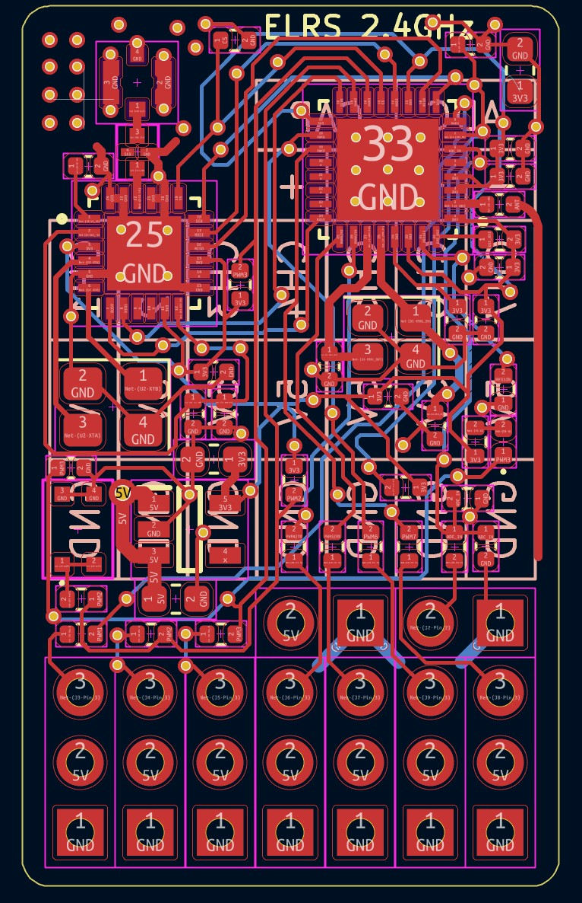
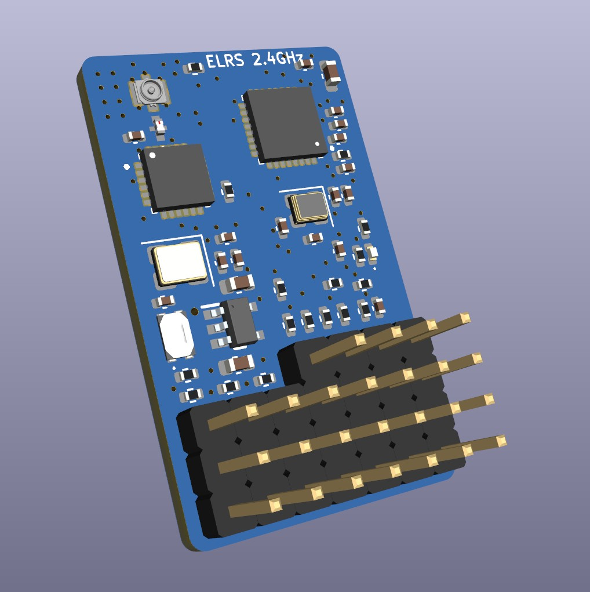

Projects
This radio reciever is a 2.4GHz module designed to be used with any sort of radio-controlled drone/car/boat that measures approximately 32x20mm. It is flashed with firmware from ExpressLRS, an open-source radio protocol on an ESP32-8285 microcontroller. It has 7 PWM outputs built into the board or can be or can be simply used as TX and RX through two UART pins located on the board. The board contains two pins for a large external capacitor (470-1000uF) and ADC voltage measurement with data ELRS is able to send back to the transmitter. The reciever supports ranges past 5 kilometers, utilizing an onboard LoRa chip and impedance matched antenna.
Tools & Skills: PCB Design, RF design, impedance matching/antenna, 4-layer, UART/PWM, KiCAD, ESP32 Microcontroller, small board footprint
Links: ELRS Reciever Github

